Benchmarking normalization, aggregation and models using the Ionstar Dataset
FGCZ - (Draft)
20 May, 2021
Source:vignettes/BenchmarkingIonstarData.Rmd
BenchmarkingIonstarData.RmdPlease download and install the prolfquaData package from github
rm(list = ls())
library(conflicted)
library(prolfqua)
library(tidyverse)
library(dplyr)
conflicted::conflict_prefer("filter", "dplyr")Decide if you work with all data or for speedup with subset of data:
SUBSET <- FALSEWe start by loading the IonStar dataset and the annotation from the prolfquaData package. The method add_annotation adds the annotation to the data.
datadir <- file.path(find.package("prolfquaData") , "quantdata")
inputMQfile <- file.path(datadir,
"MAXQuant_IonStar2018_PXD003881.zip")
inputAnnotation <- file.path(datadir, "annotation_Ionstar2018_PXD003881.xlsx")
mqdata <- tidyMQ_Peptides_Config(inputMQfile)
mean(grepl("CON_", mqdata$data$top_protein))## [1] 0.0104178
annotation <- readxl::read_xlsx(inputAnnotation)
res <- add_annotation(
mqdata$data,
annotation,
fileName = "raw.file"
)The setup_analysis asserts that all columns specified in the configruation are present in the data. For more details about the proflqua configuration see the vignette “Creating Configurations”.
mqdata$config$table$factors[["dilution."]] = "sample"
mqdata$config$table$factors[["run_Id"]] = "run_ID"
mqdata$config$table$factorDepth <- 1
mqdata$data <- setup_analysis(res, mqdata$config)
datafilt <- prolfqua::filter_proteins_by_peptide_count(mqdata$data, mqdata$config)$data
length(unique(datafilt$protein_Id))## [1] 4070Data normalization
We will normalize the data using the ‘LFQTransformer’ class. Since we know that the Human proteins are the Matrix in the experiment we will normalize the data using HUMAN proteins only. To this task we subset the dataset by filtering for HUMAN proteins only and then use the ‘log2_robscale_subset’ method.
lfqdata <- LFQData$new(datafilt, mqdata$config)
tr <- lfqdata$get_Transformer()
subset_h <- lfqdata$get_copy()
subset_h$data <- subset_h$data %>% filter(grepl("HUMAN", protein_Id))
lfqdataNormalized <- tr$log2_robscale_subset(lfqsubset = subset_h)The figures below show the intensity distribution before and after normalization.
before <- lfqdata$get_Plotter()
before$intensity_distribution_density()
after <- lfqdataNormalized$get_Plotter()
after$intensity_distribution_density()
Create a sample of N proteins to speed up computations of models and contrasts.
if (SUBSET) {
N <- 200
mqdataSubset <- lfqdata$get_sample(size = N, seed = 2020)
lfqNormSubset <- lfqdataNormalized$get_sample(size = N, seed = 2020)
lfqNormSubset$hierarchy_counts()
} else {
mqdataSubset <- lfqdata$clone()
lfqNormSubset <- lfqdataNormalized$clone()
}Inferring Protein intensities
We will be using the LFQDataAggregator class. To estimate protein intensities using Tukey’s median polish we need to use log2 transformed peptide intensities. The figure below shows the the peptide intensities used for estimation and the protein intensity estimates (black dashed line).
lfqAggMedpol <- LFQDataAggregator$new(lfqNormSubset, "protein")
lfqAggMedpol$medpolish()
xx <- lfqAggMedpol$plot()
xx$plots[[1]]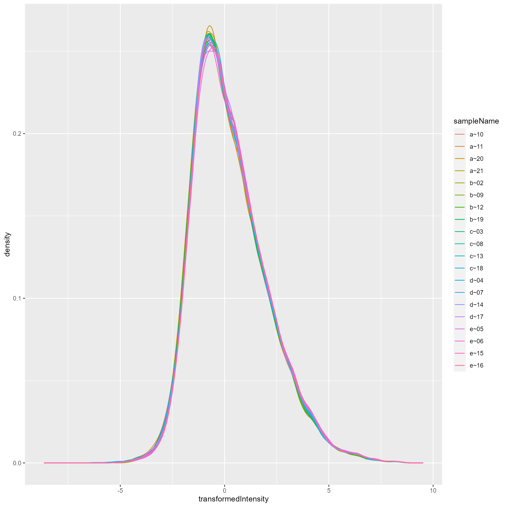
We can also estimate the protein intensities using the top N most abundant peptides. In this case we are using the untransformed protein intensities. The figure below shows the estimated protein intensities.
lfqAggregator <- LFQDataAggregator$new(mqdataSubset, "protein_topN")
lfqAggregator$mean_topN()
topN <- lfqAggregator$plot()
topN$plots[[1]]Model Fitting
Model 1 : Fitting a linear model to the protein intensities
protLFQ <- lfqAggMedpol$lfq_agg
lmmodel <- "~ dilution."
lmmodel <- paste0(protLFQ$config$table$getWorkIntensity() , lmmodel)
lfqNormSubset$config$table$hierarchyDepth <- 1
modelFunction <- strategy_lm( lmmodel, model_name = "Model")
modLinearProt <- prolfqua::build_model(protLFQ$data, modelFunction)
modLinearProt$anova_histogram()$plot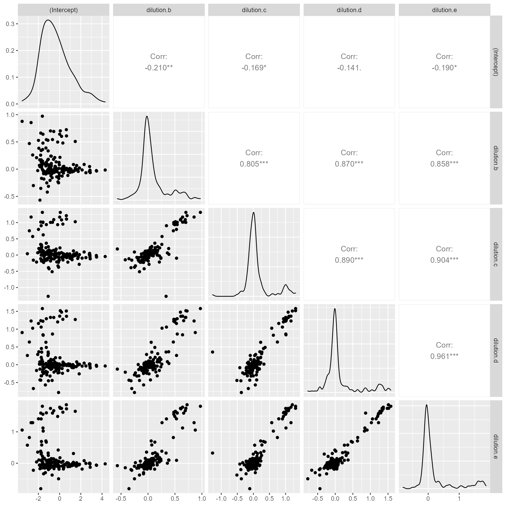
Model 2: Fitting a mixed effects model to peptide intensities
lmmodel <- "~ dilution. + (1|peptide_Id) + (1|sampleName)"
lmmodel <- paste0(lfqNormSubset$config$table$getWorkIntensity() , lmmodel)
lfqNormSubset$config$table$hierarchyDepth <- 1
modelFunction <- strategy_lmer( lmmodel, model_name = "Model")
modMixedProtLevel <- prolfqua::build_model(lfqNormSubset$data, modelFunction)
modMixedProtLevel$anova_histogram()$plot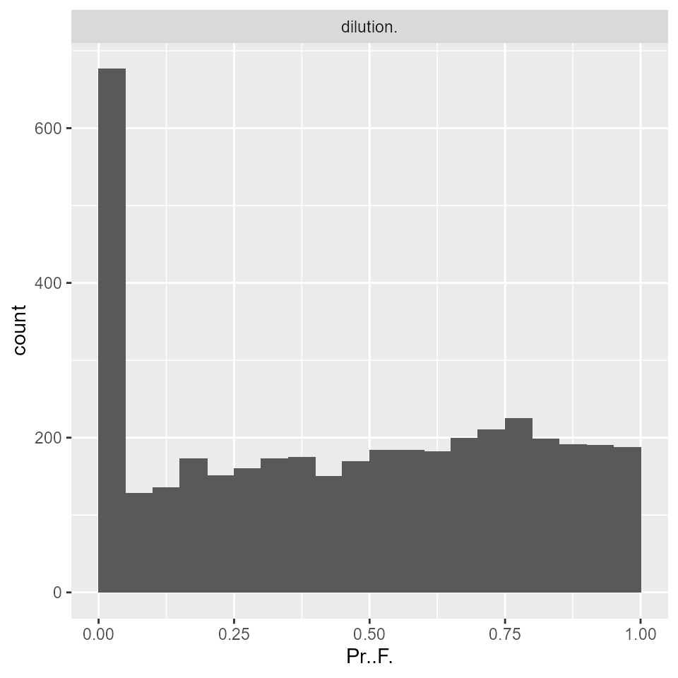
Model 3: Fitting peptide level models
lmmodel <- "~ dilution."
lfqNormSubset$config$table$hierarchyDepth## [1] 1
lfqNormSubset$config$table$hierarchyDepth <- 2
lmmodel <- paste0(lfqNormSubset$config$table$getWorkIntensity() , lmmodel)
modelFunction <- strategy_lm( lmmodel, model_name = "Model")
modLMPepLevel <- prolfqua::build_model(lfqNormSubset$data,
modelFunction,
subject_Id = lfqNormSubset$subject_id())
modLMPepLevel$anova_histogram()$plot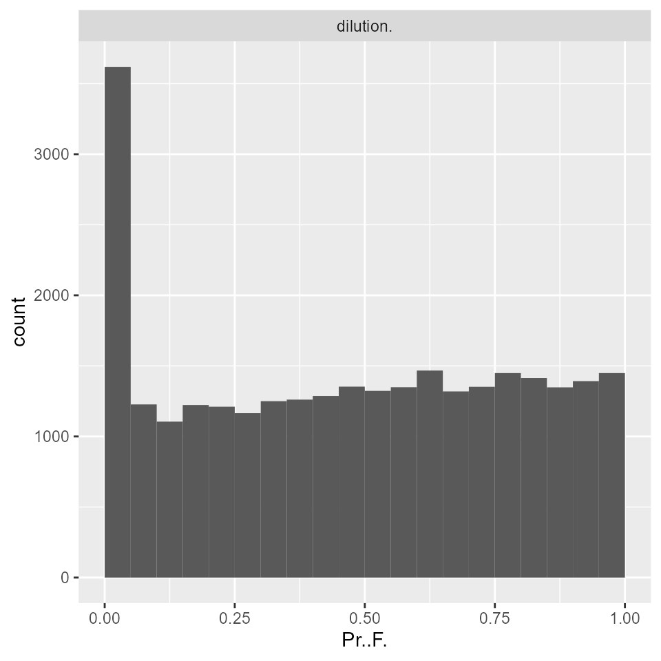
Computing Contrasts
Once models are fitted contrasts can be computed. The R code below defines all possible contrasts among conditions for the ionstar dataset.
DEBUG <- FALSE
Contrasts <- c(
"dilution_(9/3)_3" = "dilution.e - dilution.a",
"dilution_(9/4.5)_2" = "dilution.e - dilution.b",
"dilution_(9/6)_1.5" = "dilution.e - dilution.c",
"dilution_(9/7.5)_1.2" = "dilution.e - dilution.d",
"dilution_(7.5/3)_2.5" = "dilution.d - dilution.a",
"dilution_(7.5/4.5)_1.6(6)" = "dilution.d - dilution.b",
"dilution_(7.5/6)_1.25" = "dilution.d - dilution.c",
"dilution_(6/3)_2" = "dilution.c - dilution.a",
"dilution_(6/4.5)_1.3(3)" = "dilution.c - dilution.b",
"dilution_(4.5/3)_1.5" = "dilution.b - dilution.a"
)
tt <- Reduce(rbind, strsplit(names(Contrasts),split = "_"))
tt <- data.frame(tt)[,2:3]
colnames(tt) <- c("ratio" , "expected fold-change")
tt <- tibble::add_column(tt, contrast = Contrasts, .before = 1)
prolfqua::table_facade(tt, caption = "All possible Contrasts given 5 E. coli dilutions of the Ionstar Dataset")| contrast | ratio | expected fold-change | |
|---|---|---|---|
| init | dilution.e - dilution.a | (9/3) | 3 |
| X | dilution.e - dilution.b | (9/4.5) | 2 |
| X.1 | dilution.e - dilution.c | (9/6) | 1.5 |
| X.2 | dilution.e - dilution.d | (9/7.5) | 1.2 |
| X.3 | dilution.d - dilution.a | (7.5/3) | 2.5 |
| X.4 | dilution.d - dilution.b | (7.5/4.5) | 1.6(6) |
| X.5 | dilution.d - dilution.c | (7.5/6) | 1.25 |
| X.6 | dilution.c - dilution.a | (6/3) | 2 |
| X.7 | dilution.c - dilution.b | (6/4.5) | 1.3(3) |
| X.8 | dilution.b - dilution.a | (4.5/3) | 1.5 |
relevantContrasts <- c("dilution_(9/7.5)_1.2",
"dilution_(7.5/6)_1.25",
"dilution_(6/4.5)_1.3(3)",
"dilution_(4.5/3)_1.5" )
tt <- Reduce(rbind, strsplit(relevantContrasts,split = "_"))
tt <- data.frame(tt)[,2:3]
colnames(tt) <- c("ratio" , "expected fold-change")
tt <- tibble::add_column(tt, contrast = Contrasts[names(Contrasts) %in% relevantContrasts], .before = 1)
prolfqua::table_facade(tt, caption = "Contrasts used for benchmark.")| contrast | ratio | expected fold-change | |
|---|---|---|---|
| init | dilution.e - dilution.d | (9/7.5) | 1.2 |
| X | dilution.d - dilution.c | (7.5/6) | 1.25 |
| X.1 | dilution.c - dilution.b | (6/4.5) | 1.3(3) |
| X.2 | dilution.b - dilution.a | (4.5/3) | 1.5 |
relevantContrasts <- Contrasts[names(Contrasts) %in% relevantContrasts]There are, as of today, four contrasts classes in the package prolfqua - ‘ContrastSimpleImputed’ : contrast computation with imputation of fold changes and t-statistic estimation using pooled variances. - ‘Contrast’ : uses Wald test, - ‘ContrastModerated’ : applies variance moderation:, - ‘ContrastROPECA’ implements estimate and p-value aggregation
Contrasts with Imputation
In order to estimate fold-changes, statistics and p-values of proteins for which linear models could not be fitted because of an excess of missing measurements, the following procedure is applied. The mean intensity of a protein over all samples in a condition is computed. For the proteins with no observation in one condition, we imputed their intensities using the mean of the 10% smallest average peptide intensities. The standard deviation is estimated in the condition where the peptide is observed.
contrImp <- prolfqua::ContrastsSimpleImpute$new(protLFQ, relevantContrasts)
pl <- contrImp$get_Plotter()
bb <- contrImp$get_contrasts()
plc <- contrImp$get_Plotter()
plc$volcano()## $FDR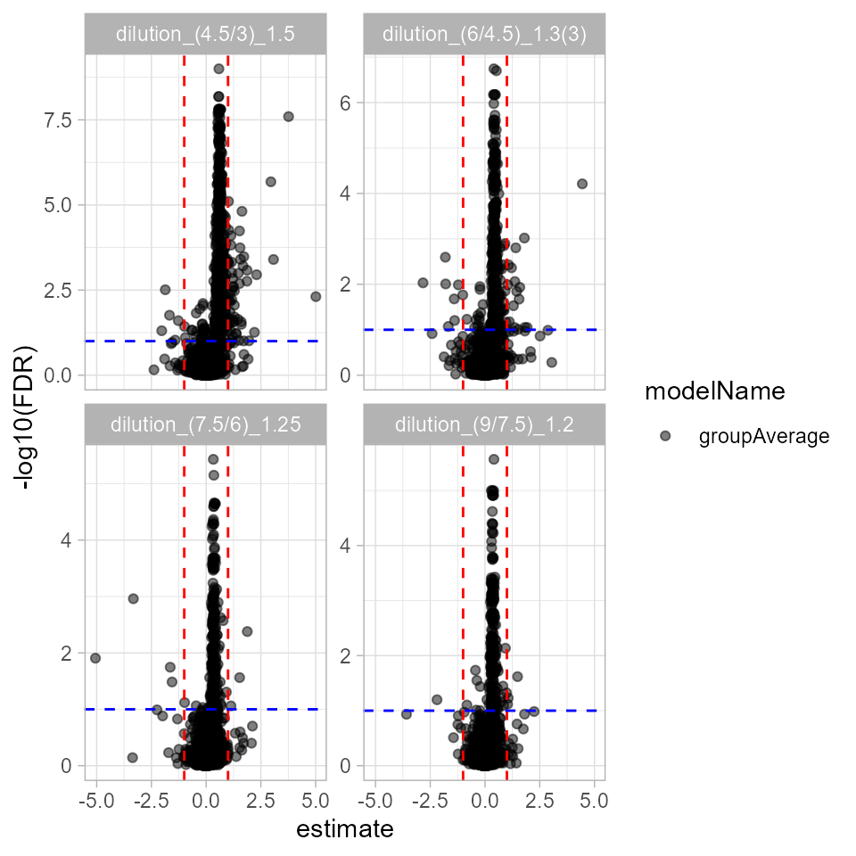
plc$histogram()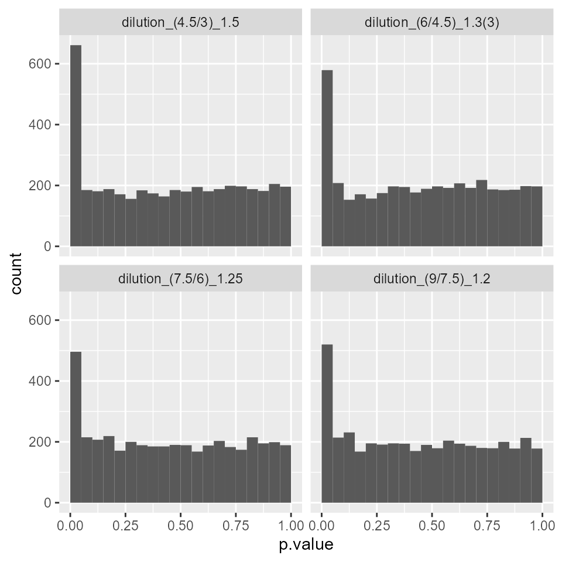
allContrasts <- list()
allContrasts$imputation <- contrImp$get_contrasts()
ttd <- prolfqua::ionstar_bench_preprocess(contrImp$get_contrasts())
benchmark_imputation <- make_benchmark(ttd$data,
model_description = "med. polish and lm. imputation",
model_name = "prot_imputation",
FDRvsFDP = list(list(sc = "FDR", desc = FALSE))
)
benchmark_imputation$plot_ROC()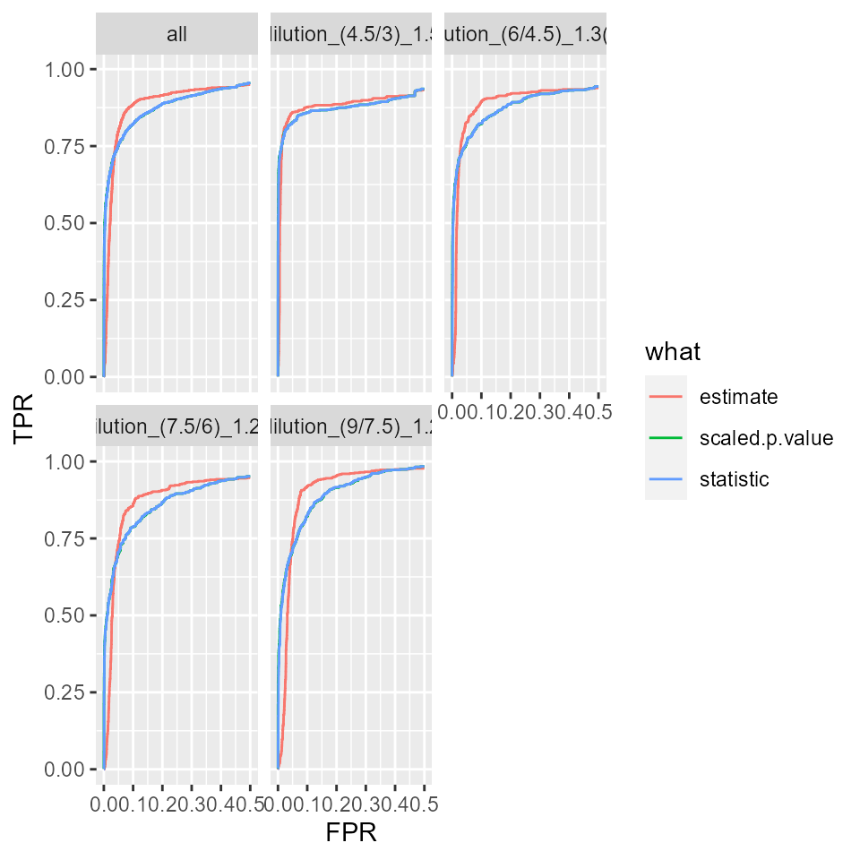
benchmark_imputation$plot_FDRvsFDP()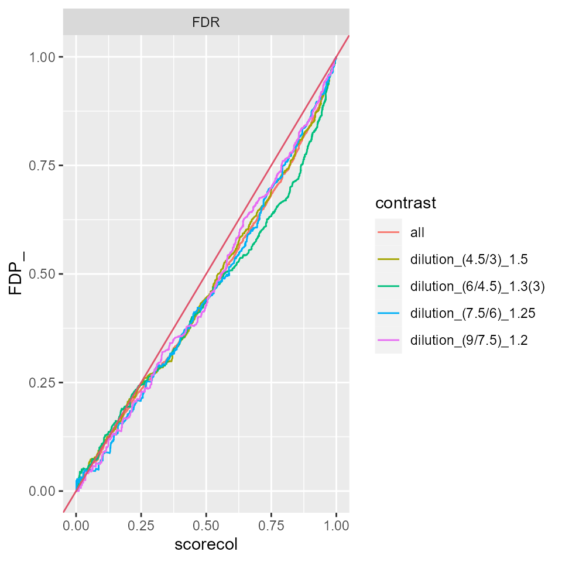
prolfqua::table_facade(benchmark_imputation$smc$summary, caption = "Nr of proteins with Nr of estimated contrasts.")| nr_missing | protein_Id |
|---|---|
| 0 | 4028 |
| 4 | 2 |
allBenchmarks <- list()
allBenchmarks$benchmark_imputation <- benchmark_imputationContrasts from Model 1
dim(modLinearProt$modelDF)## [1] 4070 9
contrProt <- prolfqua::Contrasts$new(modLinearProt, relevantContrasts)
pl <- contrProt$get_Plotter()
pl$volcano()## $FDR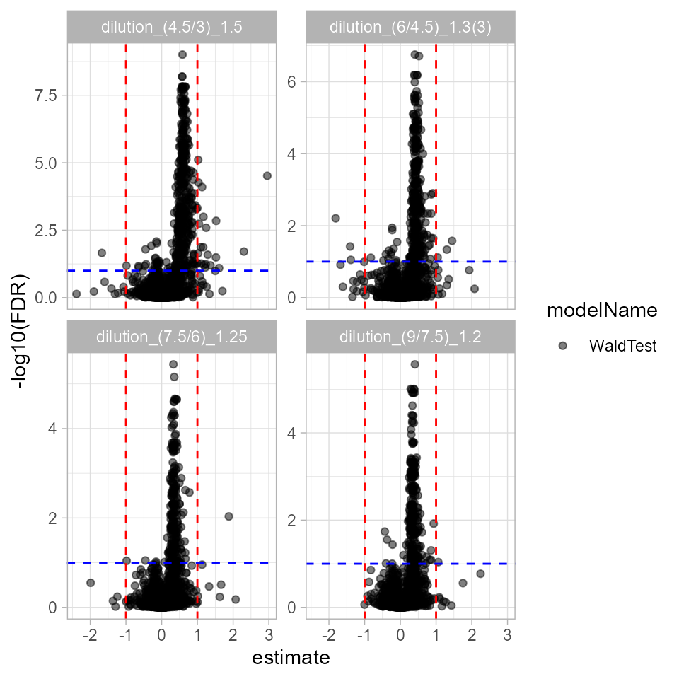
pl$histogram()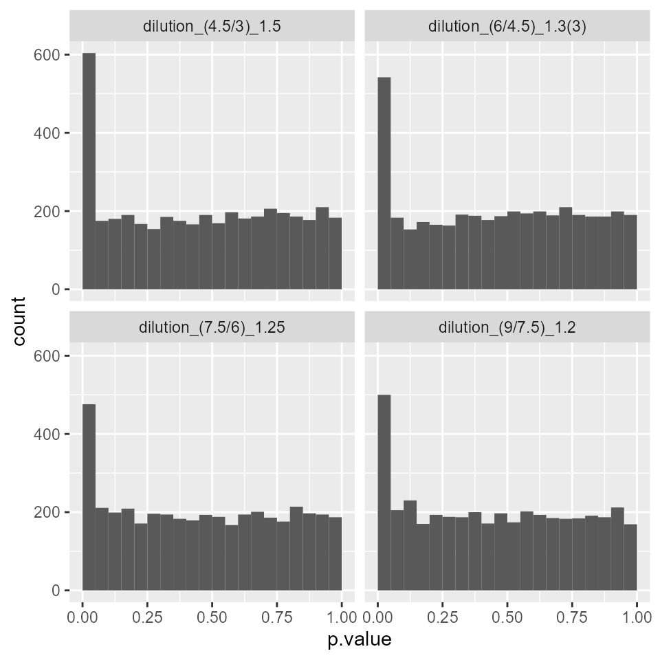
allContrasts$Prot <- contrProt$get_contrasts()
ttd <- prolfqua::ionstar_bench_preprocess(contrProt$get_contrasts())
ttd$data$protein_Id %>% unique %>% length## [1] 4030
benchmark_Prot <- make_benchmark(ttd$data,
model_description = "med. polish and lm",
model_name = "prot_med_lm"
)
prolfqua::table_facade(benchmark_Prot$smc$summary, caption = "Nr of proteins with Nr of estimated contrasts.")| nr_missing | protein_Id |
|---|---|
| 0 | 3951 |
| 1 | 9 |
| 2 | 54 |
| 3 | 11 |
| 4 | 5 |
#benchmark_Prot$plot_score_distribution()
benchmark_Prot$plot_FDRvsFDP()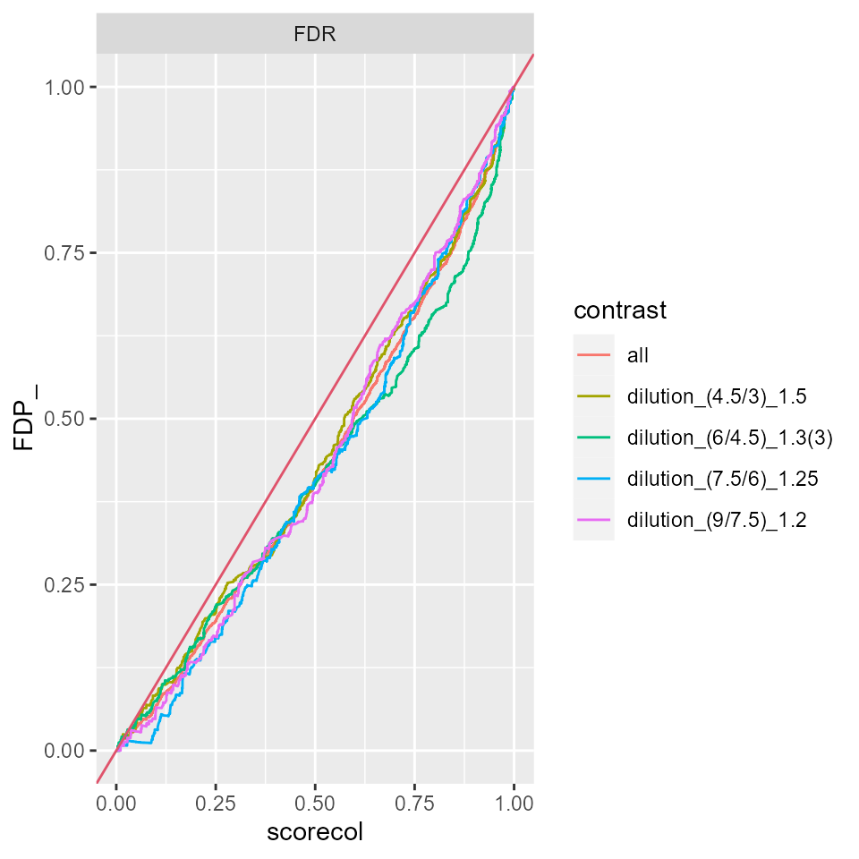
allBenchmarks$benchmark_Prot <- benchmark_ProtAdding Moderation
contrProtModerated <- ContrastsModerated$new(contrProt)
contrProtModerated$get_Plotter()$volcano()## $FDR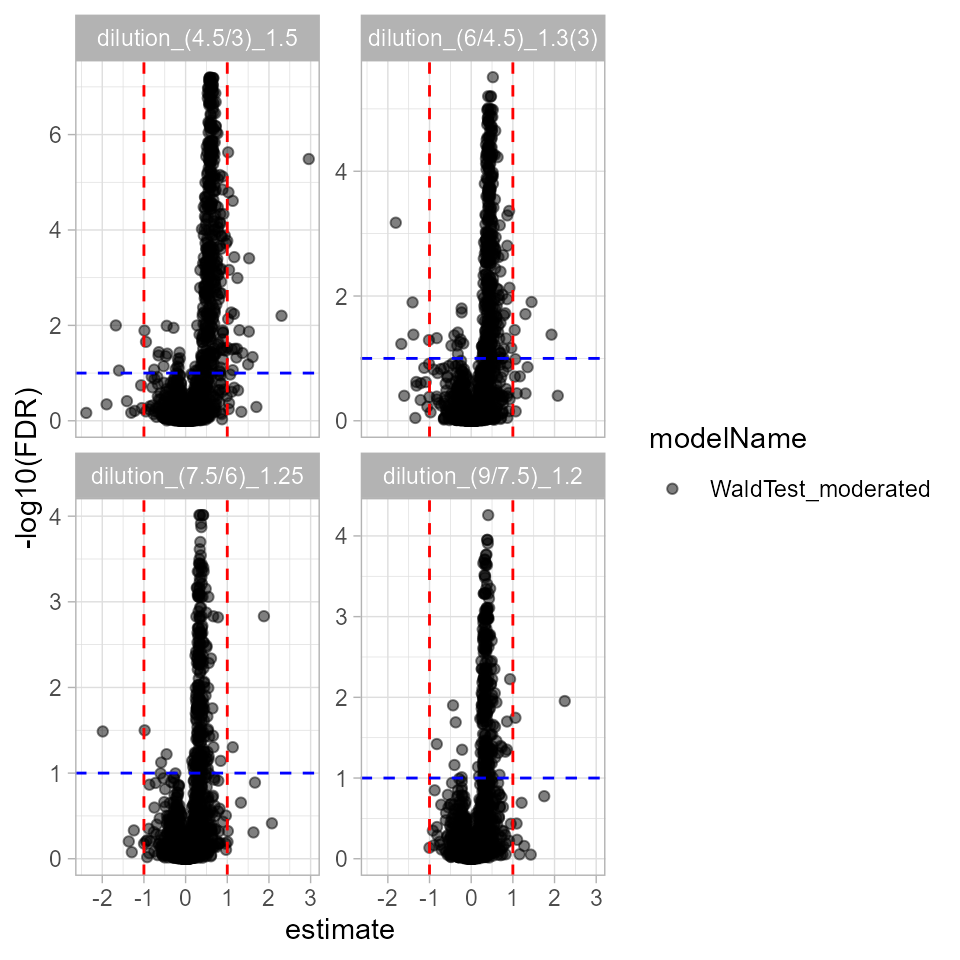
contrProtModerated$get_contrasts()$protein_Id %>% unique %>% length## [1] 4070
allContrasts$ProtModerated <- contrProtModerated$get_contrasts()
ttd <- prolfqua::ionstar_bench_preprocess(contrProtModerated$get_contrasts())
benchmark_ProtModerated <- make_benchmark(ttd$data,
model_description = "med. polish and lm moderated",
model_name = "prot_med_lm_moderated")
#benchmark_ProtModerated$plot_score_distribution()
prolfqua::table_facade(benchmark_ProtModerated$smc$summary,
caption = "Nr of proteins with Nr of estimated contrasts.")| nr_missing | protein_Id |
|---|---|
| 0 | 3951 |
| 1 | 9 |
| 2 | 54 |
| 3 | 11 |
| 4 | 5 |
benchmark_ProtModerated$plot_FDRvsFDP()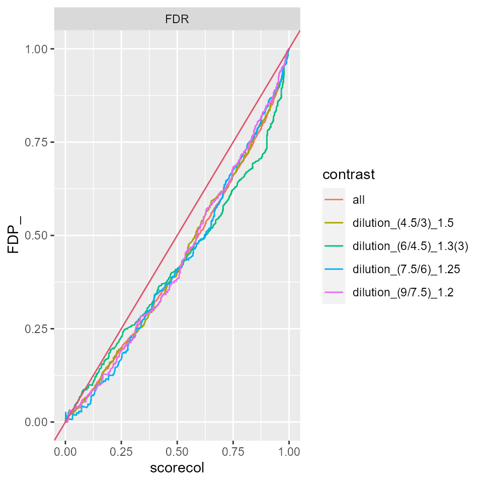
allBenchmarks$benchmark_ProtModerated <- benchmark_ProtModeratedContrasts from Model 2
contrProtMixed <- prolfqua::Contrasts$new(modMixedProtLevel, relevantContrasts, modelName = "WaldTestMixed")
pl <- contrProtMixed$get_Plotter()
pl$volcano()## $FDR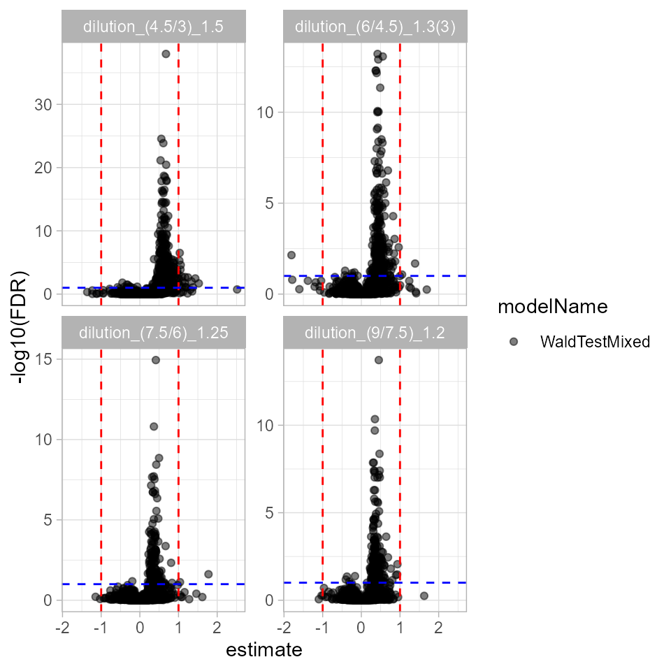
pl$histogram()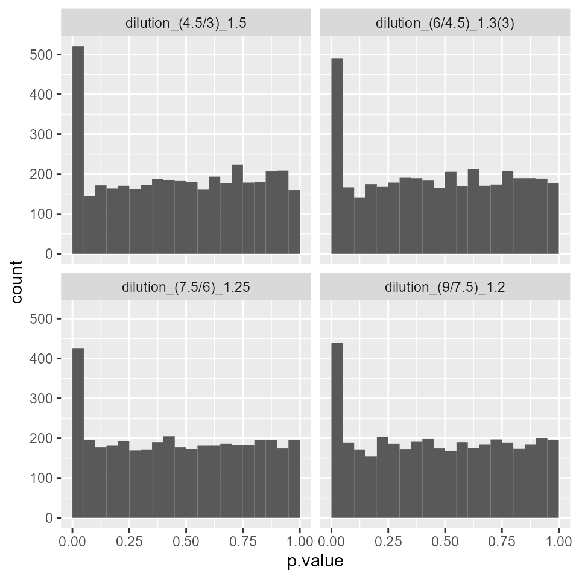
pl <- contrProtMixed$get_contrasts()
pl$protein_Id %>% unique %>% length## [1] 3979
allContrasts$contrProtMixed <- contrProtMixed$get_contrasts()
ttd <- prolfqua::ionstar_bench_preprocess(contrProtMixed$get_contrasts())
benchmark_mixed <- make_benchmark(ttd$data,
model_description = "mixed effect model",
model_name = "prot_mixed_effect"
)
benchmark_mixed$complete(FALSE)
prolfqua::table_facade(benchmark_mixed$smc$summary, caption = "Nr of proteins with Nr of estimated contrasts.")| nr_missing | protein_Id |
|---|---|
| 0 | 3939 |
#benchmark_mixed$plot_score_distribution()
benchmark_mixed$plot_FDRvsFDP()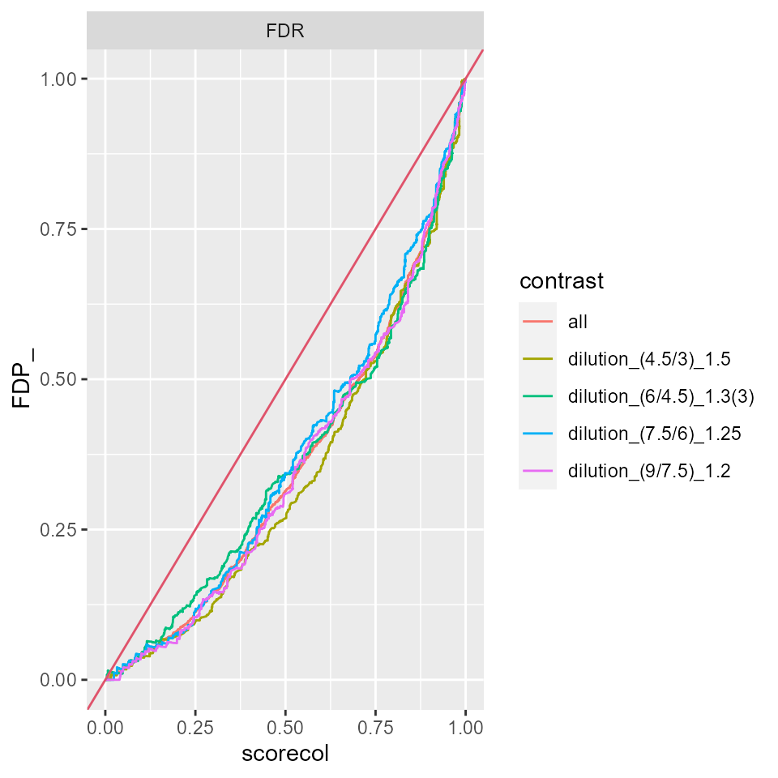
allBenchmarks$benchmark_mixed <- benchmark_mixedAdding Moderation
Since moderation requires a good degrees of freedom estimate to estimate the prior degrees of freedom we examine the denominator degrees of freedom produced by the methods implemented in lmerTest (see Histogram).
ctr <- contrProtMixed$get_contrasts()
df <- ctr$df
df[df > 59] <- 60
range(df)## [1] 1.404191 60.000000Histogram of degrees of freedom for mixed model
contrProtMixedModerated <- ContrastsModerated$new(contrProtMixed)
contrProtMixedModerated$get_Plotter()$volcano()## $FDR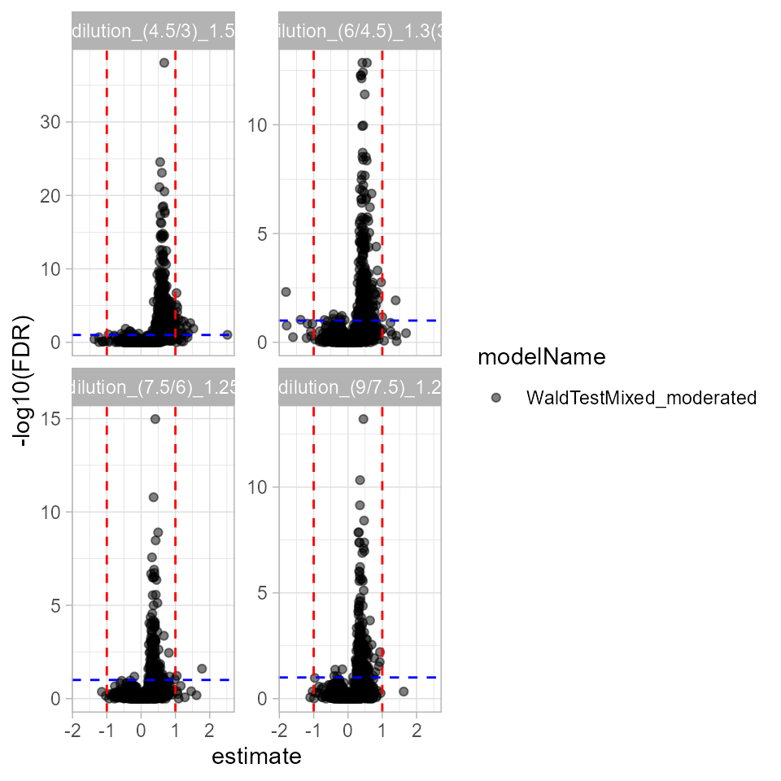
allContrasts$contrProtMixedModerated <- contrProtMixedModerated$get_contrasts()
ttd <- prolfqua::ionstar_bench_preprocess(contrProtMixedModerated$get_contrasts())
benchmark_mixedModerated <- make_benchmark(ttd$data,
model_description = "mixed effect model moderated",
model_name = "prot_mixed_effect_moderated")
prolfqua::table_facade(benchmark_mixedModerated$smc$summary, caption = "Nr of proteins with Nr of estimated contrasts.")| nr_missing | protein_Id |
|---|---|
| 0 | 3939 |
#benchmark_mixedModerated$plot_score_distribution()
benchmark_mixedModerated$plot_FDRvsFDP()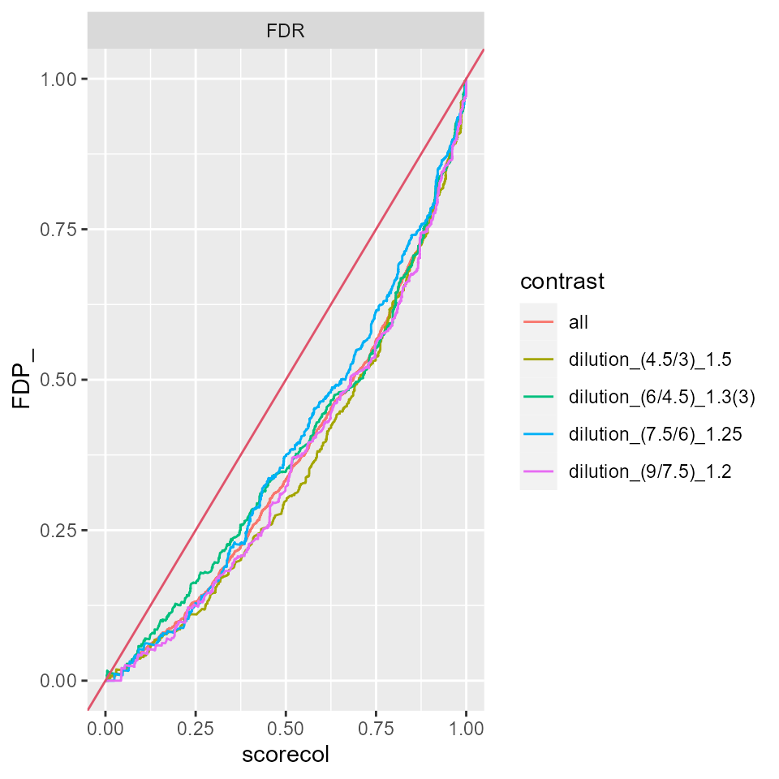
allBenchmarks$benchmark_mixedModerated <- benchmark_mixedModeratedProtein level contrasts from Peptide models
To estimate regulation probabilities using the ROPECA approach we can chain the contrast computation methods. First we compute contrasts on peptide level, than we moderated the variance, t-statistics and p-values and finally we aggregate the fold change estimates and p-values.
contrROPECA <- prolfqua::Contrasts$new(modLMPepLevel, relevantContrasts) %>%
ContrastsModerated$new() %>%
ContrastsROPECA$new()
contrROPECA$get_Plotter()$volcano()## $FDR.beta.based.significance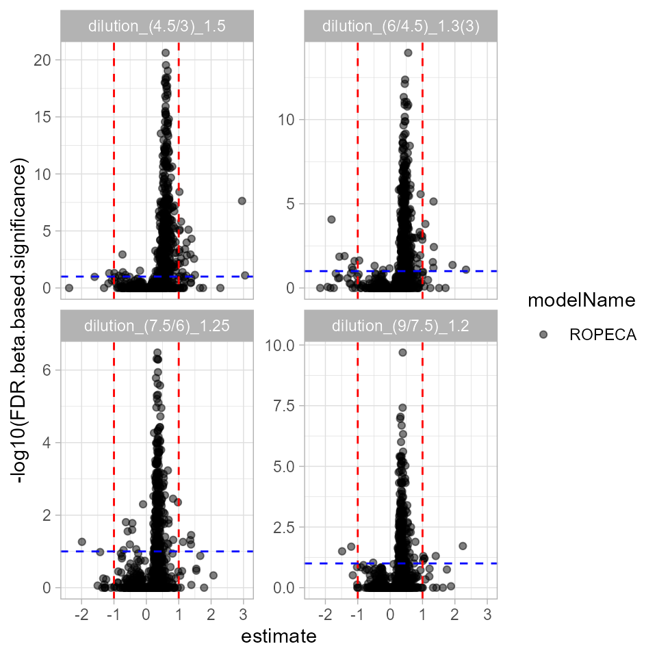
contrROPECA$get_Plotter()$histogram()
#View(contrROPECA$get_contrasts())
allContrasts$contrProtMixedModerated <- contrProtMixedModerated$get_contrasts()
ttd <- prolfqua::ionstar_bench_preprocess(contrROPECA$get_contrasts())
benchmark_ropeca <- make_benchmark(ttd$data,
toscale = c("beta.based.significance"),
benchmark = list(
list(sc = "estimate", desc = TRUE),
list(sc = "statistic", desc = TRUE),
list(sc = "scaled.beta.based.significance", desc = TRUE)
),
model_description = "Ropeca",
model_name = "ropeca",
FDRvsFDP = list(list(sc = "FDR.beta.based.significance", desc = FALSE))
)
prolfqua::table_facade(benchmark_ropeca$smc$summary, caption = "Nr of proteins with Nr of estimated contrasts.")| nr_missing | protein_Id |
|---|---|
| 0 | 3925 |
| 1 | 11 |
| 2 | 59 |
| 3 | 20 |
| 4 | 15 |
benchmark_ropeca$plot_ROC()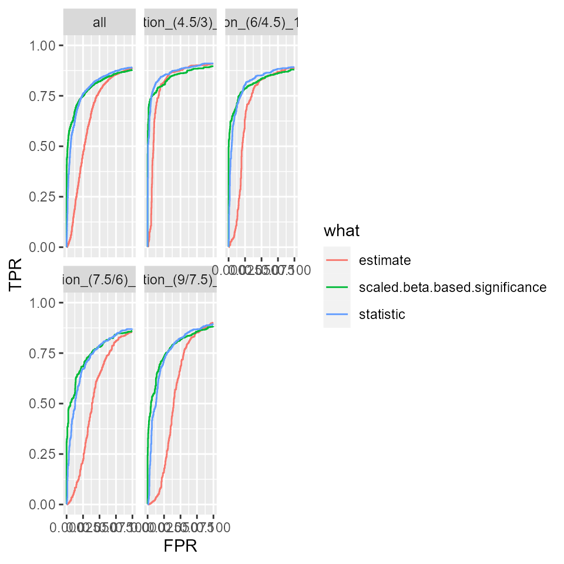
benchmark_ropeca$plot_FDRvsFDP()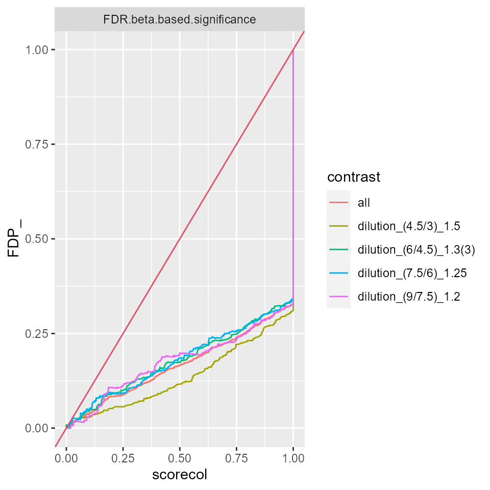
allBenchmarks$benchmark_ropeca <- benchmark_ropecaMerging contrasts
merged <- prolfqua::addContrastResults(prefer = contrProtMixedModerated, add = contrImp)
allContrasts$merged <- merged
saveRDS(allContrasts, file = "../inst/Benchresults/allContrasts.RDS")
ttd <- prolfqua::ionstar_bench_preprocess(merged)
benchmark_merged <- make_benchmark(ttd$data,
model_description = "merge of prot moderated and imputed",
model_name = "prot_merged")
prolfqua::table_facade(benchmark_merged$smc$summary, caption = "Nr of proteins with Nr of estimated contrasts.")| nr_missing | protein_Id |
|---|---|
| 0 | 4028 |
| 4 | 2 |
#benchmark_mixedModerated$plot_score_distribution()
benchmark_merged$plot_FDRvsFDP()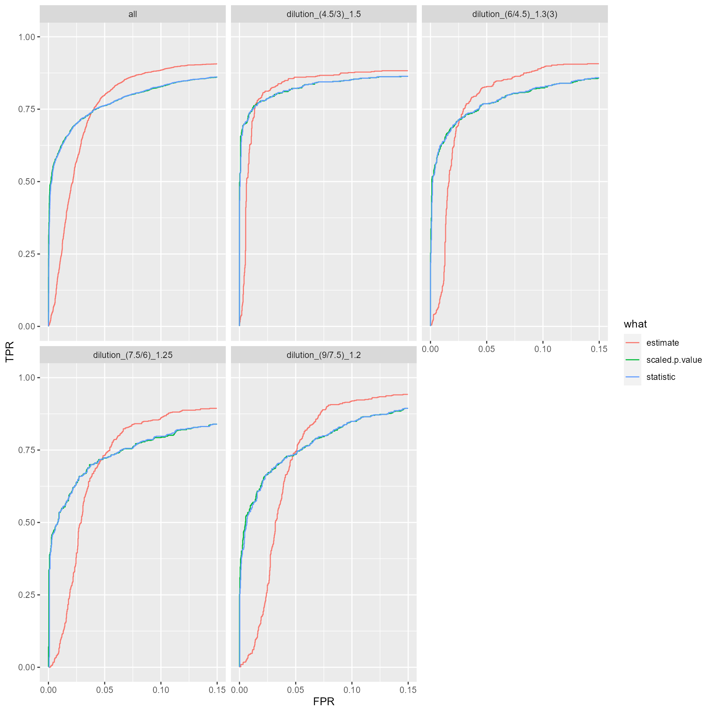
benchmark_merged$plot_ROC()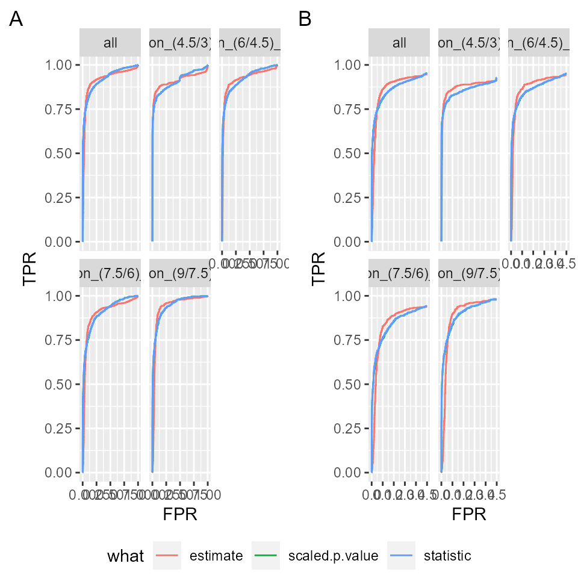
allBenchmarks$benchmark_merged <- benchmark_merged
saveRDS(allBenchmarks, file = "../inst/Benchresults/allBenchmarkds.RDS")Benchmarking
The table below summarizes the contrast estimates produced which will be benchmarked.
| Model | Contrast | Moderation | Aggregation | |
|---|---|---|---|---|
| Protein Intensity | lm | o | o | |
| Protein Intensity Imputed | pooled variance | o | o | |
| Peptide Intensity | lmer | o | o | |
| Peptide Intensity | lm | o |
ttt <- sapply(allBenchmarks, function(x){x$complete(FALSE)})
res <- map_df(allBenchmarks, function(x){x$pAUC()})
resAllB <- res %>% filter(contrast == "all")
bb <- resAllB %>% mutate(whatfix = case_when(what == "scaled.beta.based.significance" ~ "scaled.p.value", TRUE ~ what))
ggplot(bb, aes(x = Name, y = pAUC_10)) +
geom_bar(stat = "identity") +
facet_wrap(~whatfix) +
coord_cartesian(ylim = c(65,82.5)) +
theme_minimal() +
theme(axis.text.x = element_text(angle = -90, vjust = 0.5))Partial area under the ROC curve at 10% FPR.
ggplot(bb, aes(x = Name, y = pAUC_20)) +
geom_bar(stat = "identity") +
facet_wrap(~whatfix) +
coord_cartesian(ylim = c(80,87.5)) +
theme_minimal() +
theme(axis.text.x = element_text(angle = -90, vjust = 0.5)) 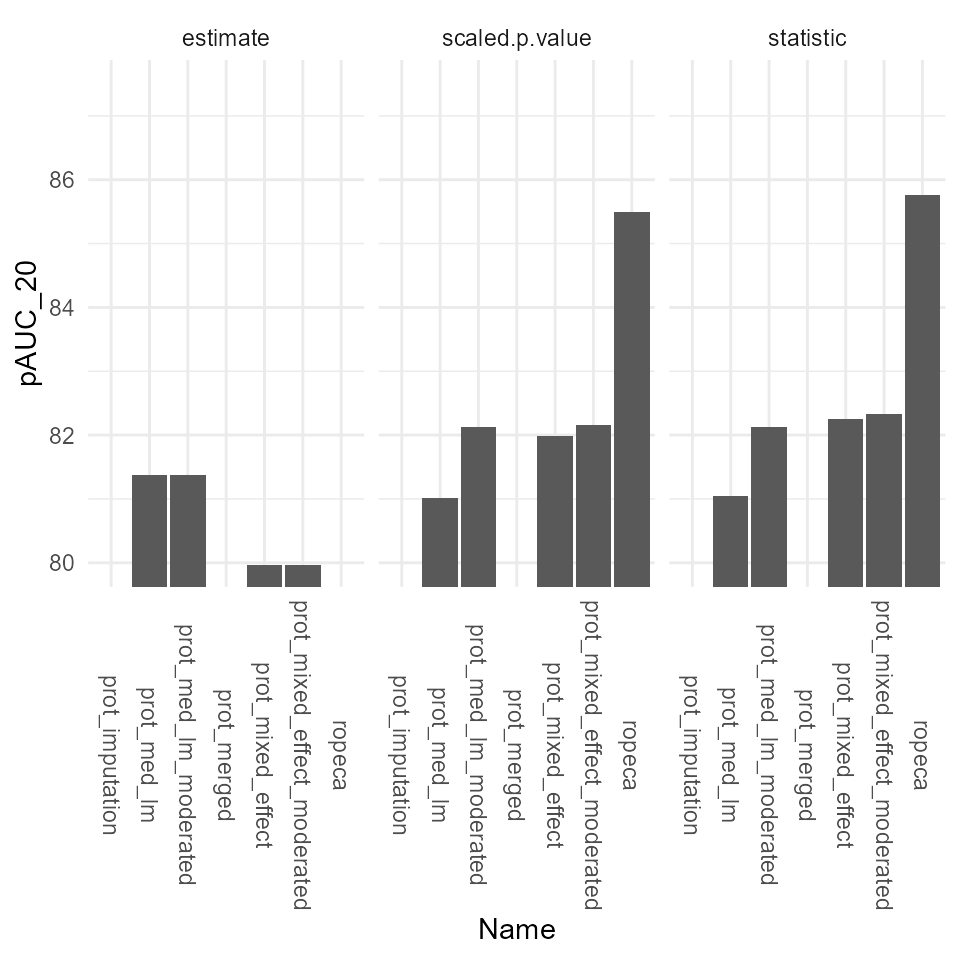
Look at the nr of estimated contrasts.
dd <- map_df(allBenchmarks, function(x){res <- x$smc$summary; res$name <- x$model_name;res})
dd$nr_missing <- as.integer(dd$nr_missing) - 1
dd <- dd %>% mutate(nrcontrasts = protein_Id * (4-nr_missing))
dds <- dd %>% group_by(name) %>% summarize(nrcontrasts = sum(nrcontrasts))
dds %>% ggplot(aes(x = name, y = (nrcontrasts - min(nrcontrasts)))) +
geom_bar(stat="identity") +
theme(axis.text.x = element_text(angle = -90, vjust = 0.5)) +
geom_text(aes(label=nrcontrasts), position=position_dodge(width=0.9), vjust=-0.25)NR of estimated contrasts
Plot FDR vs FDP
dd <- map_df(allBenchmarks, function(x){res <- x$get_FDRvsFDP(); res$name <- x$model_name;res})
dd %>% ggplot(aes(y = FDP_, x = scorecol )) +
geom_line(aes(color = model_name)) +
facet_wrap(~contrast) +
geom_abline(intercept = 0, slope = 1, color=2)Compare FDR estimate with false discovery proportion (FDP).